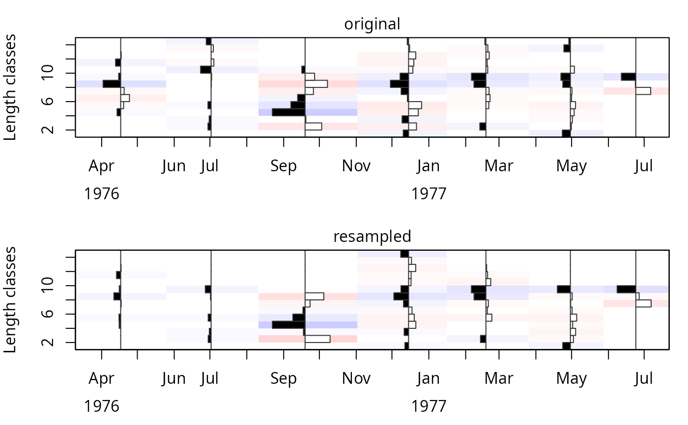
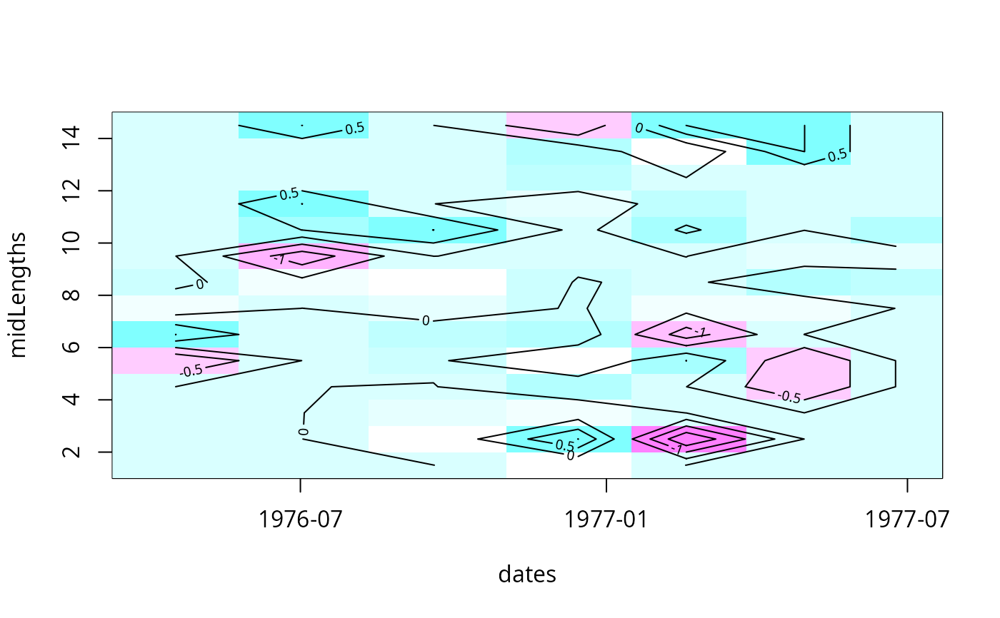

The function resamples the `lfq` data by sample date. Sampling is done in a non-parametric manner that follows the relative frequencies of the original data, allowing for individual counts to be selected more than once (i.e. `replace = TRUE` in sample), and resulting in total counts (by sample) equal to the original data (unless `sampSize` is provided).
Arguments
- lfq
a length frequency object of the class `lfq`. The catch has to be the sampled numbers of fish (not raised to the total catch, see
lfqRaise).- sampSize
optional; number of individuals drawn per sample. By default (`sampSize = NA`), the number of individuals of each sample in the original data is used.
- boot
optional; an object of class `lfqBoot` (e.g. from
ELEFAN_GA_boot) for reproducing the resampled lfq data sets by re-using its seed values.
Value
a resampled version of the `lfq` class dataset, or, if `boot` is provided, a list with one resampled `lfq` dataset per seed value in `boot`.
Examples
# load data
data(alba)
# resample data
alba_p <- lfqResample(alba)
# side-by-side plot
op <- par( mfcol = c(2,1), mar=c(4,4,2,1) )
plot(lfqRestructure(alba)); mtext("original", side=3, line=0.25)
plot(lfqRestructure(alba_p)); mtext("resampled", side=3, line=0.25)
box()

par(op)
# relative difference
alba_diff <- alba
alba_diff$delta <- (alba$catch - alba_p$catch) / alba$catch
alba_diff$delta[is.na(alba_diff$delta)] <- 0
with(alba_diff, image(x=dates, y=midLengths, z=t(delta), col=rev(cm.colors(21))) )
with(alba_diff, contour(x=dates, y=midLengths, z=t(delta), add=TRUE))
